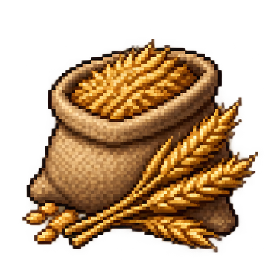
小麦p0 · 原料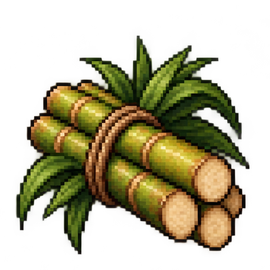
甘蔗p1 · 原料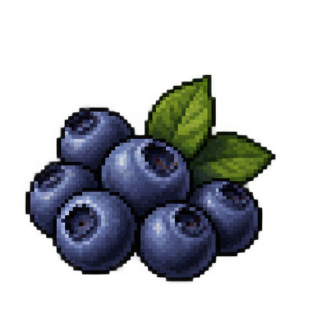
蓝莓p2 · 原料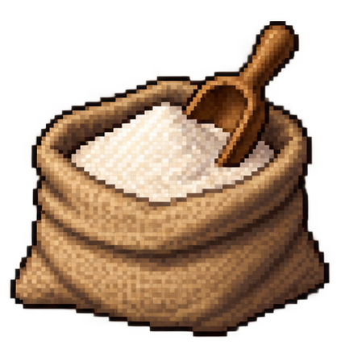
面粉p3 · 加工品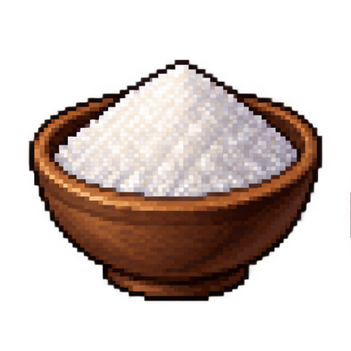
糖p4 · 加工品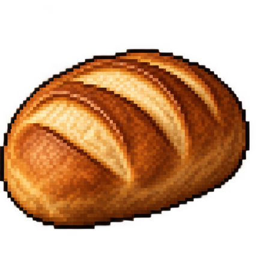
面包p5 · 成品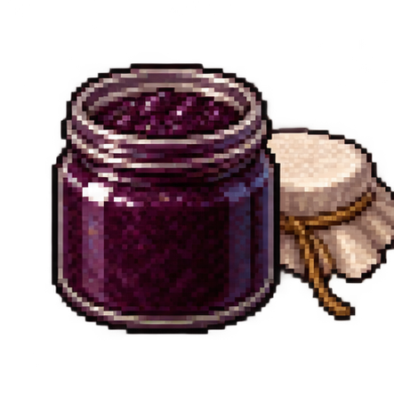
蓝莓果酱p6 · 成品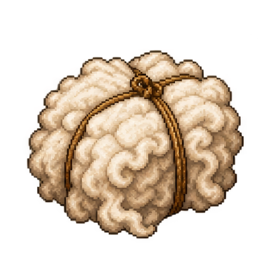
羊毛p8 · 原料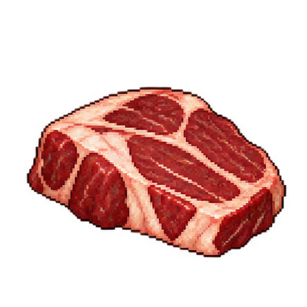
肉p9 · 加工品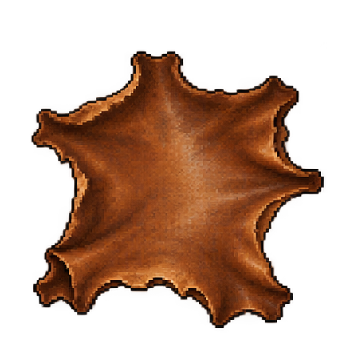
皮革p10 · 加工品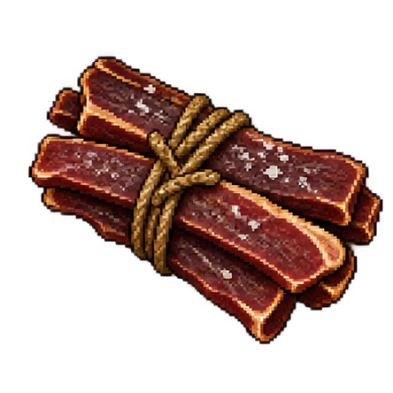
腌肉p11 · 成品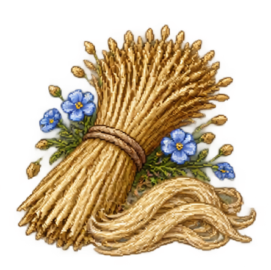
亚麻p13 · 原料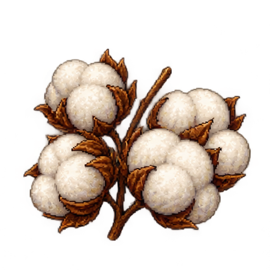
棉花p14 · 原料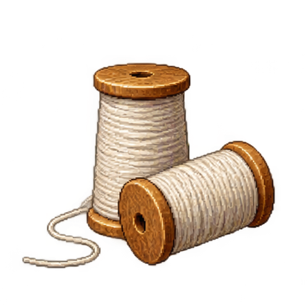
纱线p15 · 加工品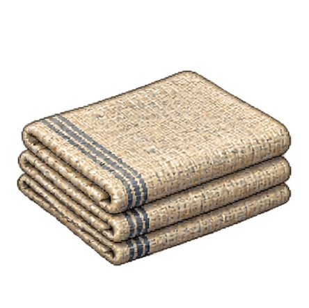
布匹p16 · 加工品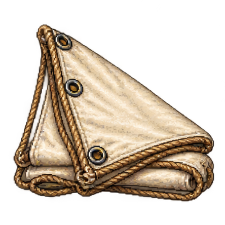
船帆p17 · 成品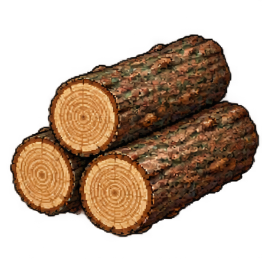
原木p19 · 原料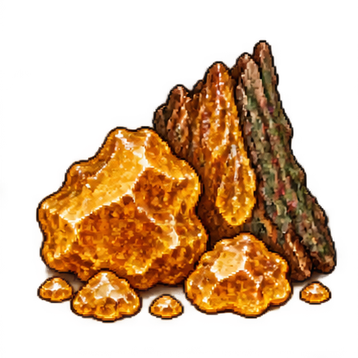
树脂p20 · 原料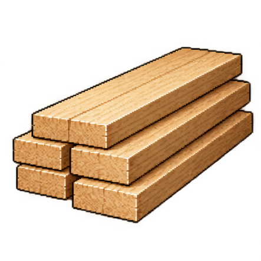
木板p21 · 加工品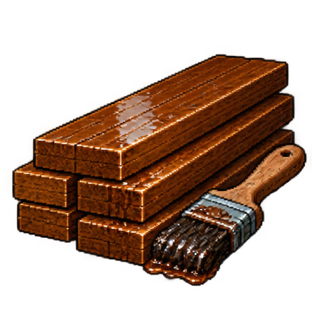
涂层木材p22 · 加工品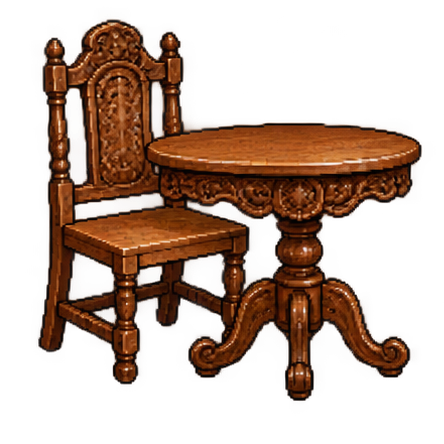
家具p23 · 成品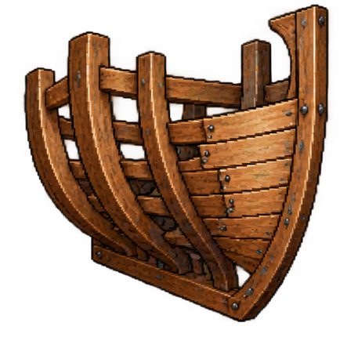
船体组件p24 · 成品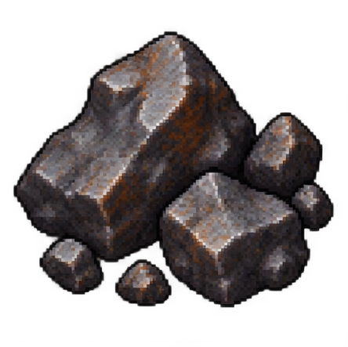
铁矿p25 · 原料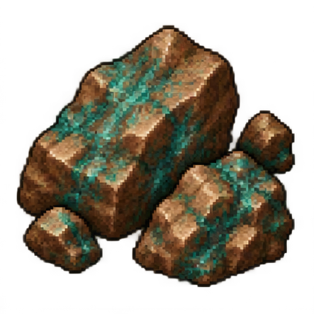
铜矿p26 · 原料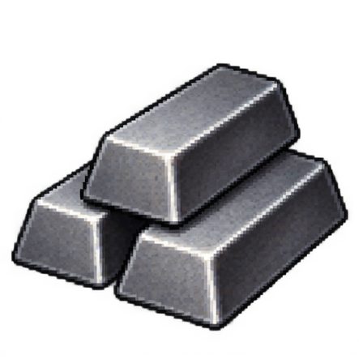
铁锭p27 · 加工品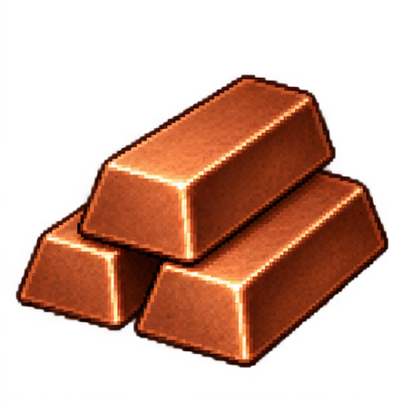
铜锭p28 · 加工品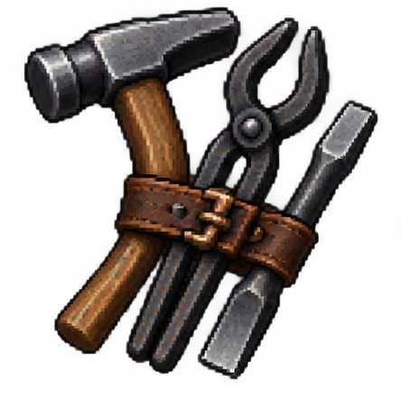
工具组p29 · 成品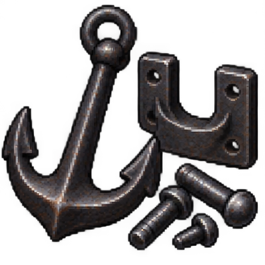
金属船件p30 · 成品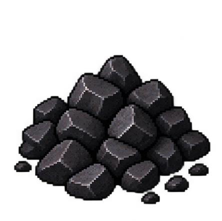
煤p31 · 原料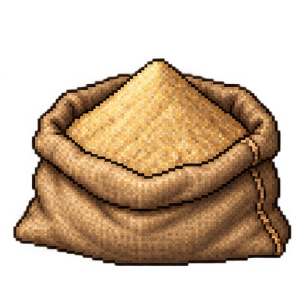
砂p32 · 原料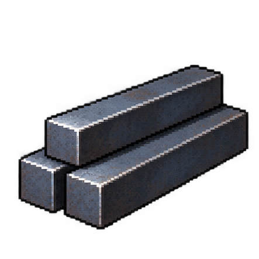
钢材p33 · 加工品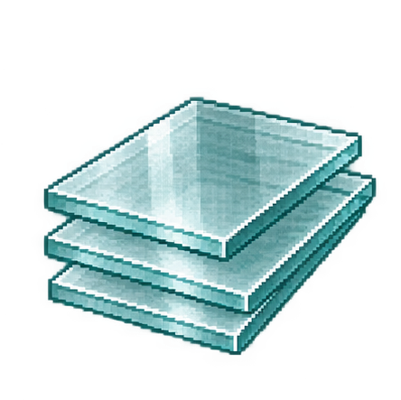
玻璃p34 · 加工品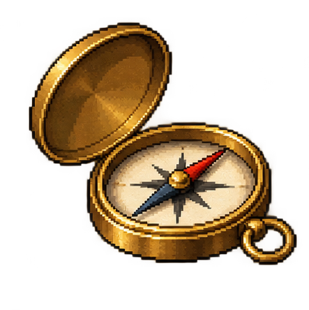
罗盘p36 · 成品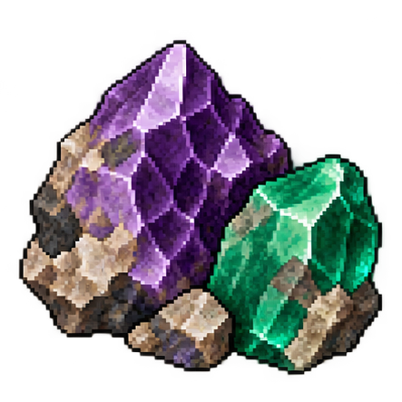
宝石原石p38 · 原料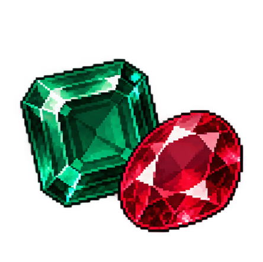
切割宝石p40 · 加工品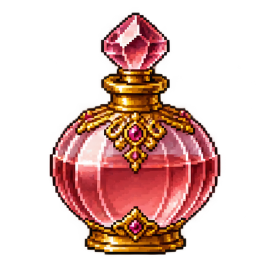
香水p41 · 成品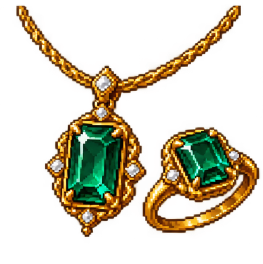
珠宝p42 · 成品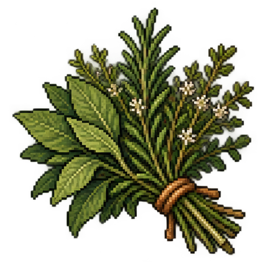
药草p43 · 原料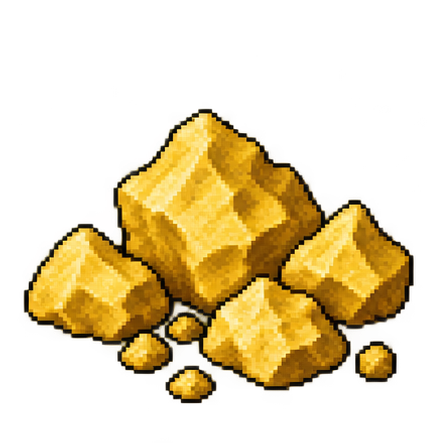
硫磺p44 · 原料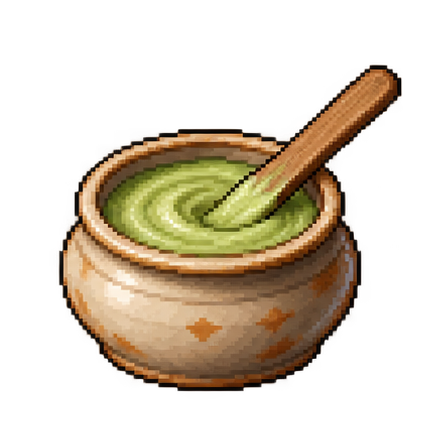
药膏p45 · 加工品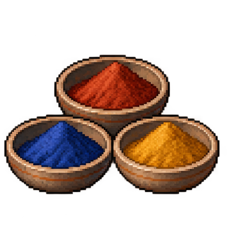
颜料p46 · 加工品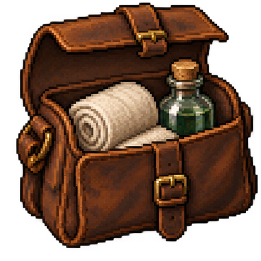
医疗包p47 · 成品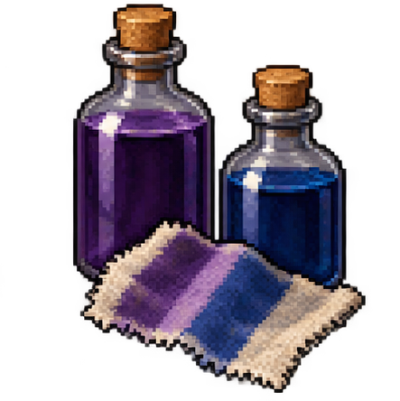
高级染料p48 · 成品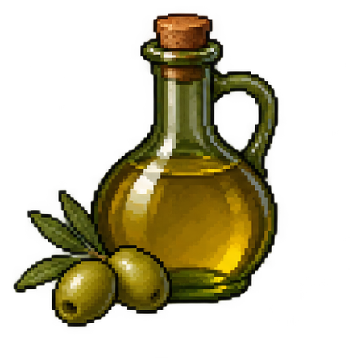
橄榄油trade_olive_oil · 成品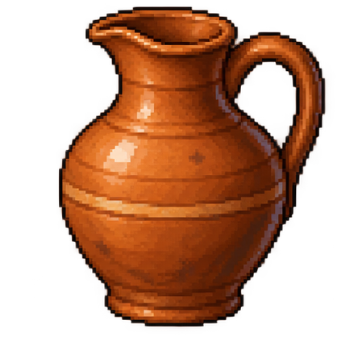
陶器trade_pottery · 成品